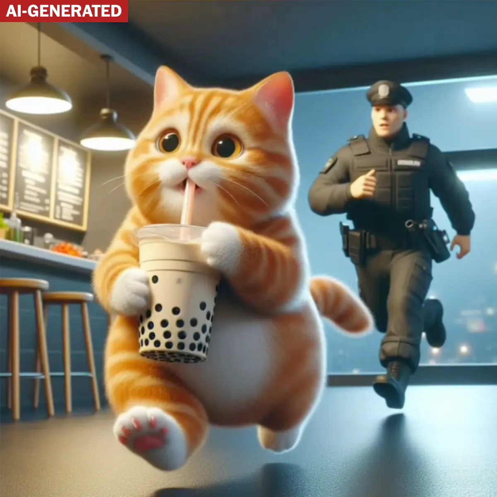

Cats
- Most cats are cuddly and often hilarious in their behavior.
- They do all kinds of cute and silly things that bring joy.
- Cats are independent, easy to care for, and mostly quiet.
Cats are super sweet, though sometimes a little chaotic. Some are known for their high energy — especially young male cats — while others are very independent. When they’re quiet, they may ignore you, but when energetic, they might knock over everything in sight!
Despite their behavior, cats can be very loving. They often show their affection subtly. And here’s something touching: as they near the end of their life, many cats will try to spend as much time as possible close to their favorite humans.
